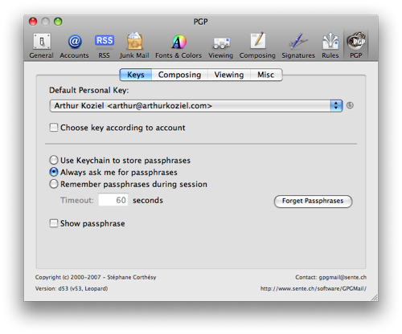

Published 10th June 2008
While recently trying to install and configure GnuPG for Mail.app under Mac OS X 10.5.3, I came across a few issues which unfortunately took a lot more time than expected.
I installed GnuPG through MacPorts. However, with MacGPG there's a simpler but also more outdated solution available. You can also give a more recent MacGPG test-release a try.
The GnuPG installation via MacPorts is pretty straightforward:
sudo port install gnupg2
Pinentry doesn't have an official port for Mac OS X, so no dialog will be displayed when encrypting or decrypting email. However, Benjamin Donnachie was so kind to create an unofficial Pinentry-mac version. You can find it in the MacGPG2 package.
After unzipping, the pinentry-mac application needs to be moved or copied to the /Applications directory:
mv pinentry-mac.app /Applications/
The gpg-agent configuration file (~/.gnupg/gpg-agent.conf) must to be modified in order to use the new pinentry-mac:
pinentry-program /Applications/pinentry-mac.app/Contents/MacOS/pinentry-mac
To reload the configuration, gpg-agent needs to be restarted:
killall gpg-agent
gpg-agent --daemon
The latest GPGMail plugin beta for Leopard's Mail.app can be found here.
To make use of custom bundles in Mail.app, it needs to be enabled first:
defaults write com.apple.mail EnableBundles -bool yes
defaults write com.apple.mail BundleCompatibilityVersion -int 3
A "Bundles" directory must be created in ~/Library/Mail/ and the .mailbundle file from the mounted GPGMail dmg needs to be copied there:
mkdir ~/Library/Mail/Bundles cp -r /Volumes/GPGMail_d53_Leopard/GPGMail.mailbundle ~/Library/Mail/Bundles/
Upon a restart of Mail.app, a notification should display a small warning about missing keys. The GPG Howto from the ubuntu documentation describes the process of generating keys pretty well.
That's it, i hope this guide was helpful to some people. You can find my current public key on my About page or download it from a keyserver like the MIT's Public Key Server.